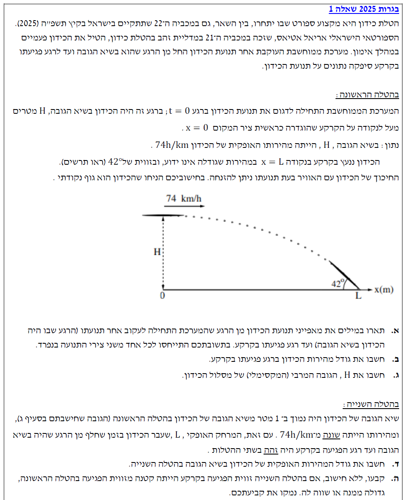

פתרון בגרות בפיזיקה - מכניקה 2025 (שאלה 1)
עודכן:
--.--.-- --:--:--

תמונת השאלה המקורית
לא נמצאה תמונה בשם question-image.png באותה תיקייה.
הכנה לפתרון - הגדרת מערכת צירים
לפני שנתחיל, עלינו להגדיר בצורה ברורה את מערכת הצירים שלנו.
נמקם את ראשית הצירים \( (x=0, y=0) \) על הקרקע, בדיוק מתחת לנקודת שיא הגובה של הכידון (כפי שמופיע בתרשים של השאלה).
נגדיר את כיוון ציר \( x \) חיובי ימינה, ואת כיוון ציר \( y \) חיובי כלפי מעלה.
מאחר שכוח הכובד פועל תמיד כלפי מטה, תאוצת הכובד במערכת הצירים שלנו תהיה: \( a_y = -g = -10 \text{ m/s}^2 \).
סעיף א'
מה נתון: מדידת תנועת הכידון (\( t=0 \)) מתחילה בנקודת שיא הגובה של מסלולו. בנקודה זו, המהירות האנכית מתאפסת והמהירות הכוללת היא אופקית בלבד. לכן, מרגע תחילת המדידה ואילך, המשך תנועתו באוויר מנותח כזריקה אופקית (מאחר שהתנגדות האוויר ניתנת להזנחה).
מה מחפשים: תיאור מילולי של מאפייני התנועה (מהירות ותאוצה) לכל אחד מהצירים בנפרד (ציר האופק \( x \) וציר האנך \( y \)).
נוסחאות בשימוש: תאוצת נפילה חופשית (בציר האנכי): \(a_y = -g\)
הצבה ופתרון:
נשרטט תרשים קינמטי של תנועת הכידון המציג את כיוון התאוצה (במקום כוחות, כפי שנהוג בניתוח תנועה בליסטית):
על פי הכללים של זריקה אופקית, ננתח כל ציר בנפרד:
- בציר האופקי (\( x \)): לגוף בנפילה חופשית אין תאוצה בציר האופקי. לכן התאוצה היא אפס: \( a_x = 0 \). כתוצאה מכך, המהירות בציר ה-x היא מהירות קבועה (גודלה וכיוונה אינם משתנים וזהים למהירות בשיא הגובה).
- בציר האנכי (\( y \)): הגוף נמצא בנפילה חופשית ולכן יש לו תאוצה קבועה כלפי מטה, שגודלה שווה לתאוצת הכובד (\( g \)). במערכת הצירים שהגדרנו כלפי מעלה: \( a_y = -g = -10 \text{ m/s}^2 \). מכיוון שהמדידה מתחילה משיא הגובה (כלומר מהירות אנכית התחלתית ברגע \(t=0\) היא אפס, \( v_{0y}=0 \)) ויש לו תאוצה קבועה מטה, גודל המהירות בציר ה-y גדל ככל שהוא נופל לאורך המסלול.
ציר x: תאוצה אפס, מהירות קבועה.
ציר y: תאוצה קבועה (-g), גודל המהירות גדל.
💡 טיפ ממורה:
התנועה משיא הגובה והלאה מתנהגת בדיוק כמו זריקה אופקית! היא שילוב של שתי תנועות פשוטות שאינן תלויות זו בזו: תנועה שוות-מהירות אופקית, ונפילה חופשית אנכית (המתחילה ממהירות אנכית אפס בנקודת השיא). ברגע שהבנתם את ההפרדה הזו - כל שאלה בקינמטיקה דו-ממדית הופכת לפשוטה!
סעיף ב'
מה נתון:
בשיא הגובה המהירות אופקית לחלוטין. גודלה: \( v_0 = v_{0x} = 74 \text{ km/h} \).
זווית הפגיעה בקרקע היא \( 42^\circ \) (נמדדת ביחס לאופק, כפי שרואים בתרשים).
שלב 0 - המרת יחידות (MKS): עלינו לעבוד במטרים ושניות. נמיר את המהירות ההתחלתית מקמ"ש למטר/שנייה על ידי חלוקה ב-3.6 (או הכפלה ב-1000 מטר וחלוקה ב-3600 שניות):
\[ v_{0x} = \frac{74 \text{ km}}{\text{h}} = \frac{74 \cdot 1000 \text{ m}}{3600 \text{ s}} = \frac{74}{3.6} \approx 20.556 \text{ m/s} \]
מה מחפשים: גודל המהירות הכוללת של הכידון ברגע פגיעתו בקרקע (נקרא לה \( v \)).
נוסחאות בשימוש:
הקשר הטריגונומטרי בין רכיבי וקטור. לפי גיאומטריה פשוטה: \( v_x = v \cos(\alpha) \)
הצבה ופתרון:
נשרטט את וקטור המהירות ברגע הפגיעה בקרקע ופרוק הרכיבים שלו:
כפי שהסברנו בסעיף א', המהירות האופקית אינה משתנה. לכן רכיב ה-x של המהירות בפגיעה זהה למהירות ההתחלתית:
\[ v_x = v_{0x} = 20.556 \text{ m/s} \]
נשתמש בטריגונומטריה במשולש ישר הזווית שנוצר בין וקטור המהירות השקול לרכיביו. פונקציית הקוסינוס מתארת את היחס בין הניצב שליד הזווית ליתר:
\[ \cos(42^\circ) = \frac{v_x}{v} \]
נבודד את המהירות הכוללת \( v \):
\[ v = \frac{v_x}{\cos(42^\circ)} = \frac{20.556}{\cos(42^\circ)} \approx \frac{20.556}{0.7431} \approx 27.66 \text{ m/s} \]
גודל המהירות רגע הפגיעה בקרקע הוא \( 27.66 \text{ m/s} \).
💡 טיפ ממורה:
שים לב שבשלב זה לא היינו צריכים בכלל לדעת את גובה הזריקה! ברגע שידוע לנו רכיב אחד של המהירות והזווית, המשולש הגיאומטרי של הווקטורים נותן לנו את כל התמונה. הפיזיקה מתחבאת בזה שרכיב ה-x נשמר.
סעיף ג'
מה נתון:
מרגע הפגיעה בקרקע:
גודל המהירות הכוללת: \( v = 27.66 \text{ m/s} \)
הזווית עם האופק: \( \alpha = 42^\circ \)
מיקום התחלתי: \( y_0 = H \), \( v_{0y} = 0 \)
מיקום סופי: \( y = 0 \) (קרקע)
תאוצה: \( a_y = -10 \text{ m/s}^2 \)
מה מחפשים: את הגובה המרבי של מסלול הכידון (הגובה בו התחלנו למדוד ב-\( t=0 \)), \( H \).
נוסחאות בשימוש:
נמצא קודם את המהירות האנכית בעזרת טריגונומטריה. לאחר מכן נשתמש במשואת קינמטיקה ללא זמן:
\( v^2 = v_0^2 + 2a(x - x_0) \)
הצבה ופתרון:
שלב 1: מציאת רכיב המהירות האנכית (\( v_y \)) ברגע הפגיעה בקרקע. מתוך המשולש ששרטטנו בסעיף ב':
\[ \sin(42^\circ) = \frac{|v_y|}{v} \implies |v_y| = v \cdot \sin(42^\circ) \]
\[ |v_y| = 27.66 \cdot \sin(42^\circ) \approx 27.66 \cdot 0.6691 \approx 18.51 \text{ m/s} \]
מכיוון שהכידון נופל כלפי מטה, כיוון המהירות האנכית הוא שלילי (מנוגד לציר שבחרנו): \( v_y = -18.51 \text{ m/s} \).
שלב 2: נתאים את נוסחת הקינמטיקה לציר האנכי y:
\[ v_y^2 = v_{0y}^2 + 2a_y(y - y_0) \]
נציב את כל הנתונים שאספנו למשוואה:
\[ (-18.51)^2 = 0^2 + 2 \cdot (-10) \cdot (0 - H) \]
\[ 342.62 = -20 \cdot (-H) \]
\[ 342.62 = 20H \implies H = \frac{342.62}{20} \approx 17.13 \text{ m} \]
הגובה המרבי של מסלול הכידון הוא \( H = 17.13 \text{ m} \).
💡 טיפ ממורה:
היזהרו עם סימנים בנוסחת \( v^2 \)! כשמעלים את המהירות בריבוע, המידע על כיוון התנועה (המינוס) הולך לאיבוד. לכן, קריטי להקפיד על הסימנים של התאוצה וההעתק בהתאם למערכת הצירים שבחרנו. במקרה שלנו, התאוצה שלילית (\( -10 \)) וגם ההעתק הוא שלילי (\( 0-H \), כי ירדנו למטה). כפל של שניהם שומר על המשוואה חיובית ותקינה. עקביות במערכת הצירים היא המפתח להצלחה!
סעיף ד'
מה נתון:
מתקיימת הטלה שנייה.
גובה שיא המסלול החדש (שממנו מתחילים למדוד): \( H_2 = H - 1 = 17.13 - 1 = 16.13 \text{ m} \).
המרחק האופקי (מנקודת השיא עד הפגיעה) זהה לזה שבהטלה הראשונה: \( L_2 = L_1 = L \).
המהירות האופקית בשיא הגובה השתנתה: \( v_{0x,2} \neq v_{0x,1} \).
מה מחפשים: את גודל המהירות האופקית החדשה (\( v_{0x,2} \)).
נוסחאות בשימוש:
נוסחת מיקום זמן (נשתמש בה לשני הצירים):
\( x = x_0 + v_0 t + \frac{1}{2}at^2 \)
הצבה ופתרון:
כדי למצוא מהירות חדשה, אנחנו חייבים לדעת מה המרחק האופקי \( L \) שהכידון עבר. נמצא אותו תחילה מתוך נתוני הזריקה הראשונה.
שלב 1: מציאת המרחק L מהטלה ראשונה
זמן המעוף (\( t_1 \)) בהטלה הראשונה (לפי ציר y שבו \( v_y = v_{0y} + a_y t \)):
\[ -18.51 = 0 - 10 \cdot t_1 \implies 10t_1 = 18.51 \implies t_1 = 1.851 \text{ s} \]
המרחק האופקי \( L \) בהטלה הראשונה (מהירות קבועה בציר x):
\[ L = x_0 + v_{0x} \cdot t_1 = 0 + 20.556 \cdot 1.851 \approx 38.05 \text{ m} \]
שלב 2: חזרה להטלה השנייה
נתון לנו שהמרחק בהטלה השנייה שווה. נחשב כמה זמן לוקח לכידון ליפול מגובה \( H_2 = 16.13 \text{ m} \). נציב בנוסחת מיקום-זמן עבור ציר y:
\[ y = y_0 + v_{0y}t + \frac{1}{2}a_y t^2 \]
\[ 0 = 16.13 + 0 - \frac{1}{2} \cdot 10 \cdot t_2^2 \]
\[ 0 = 16.13 - 5 t_2^2 \implies 5 t_2^2 = 16.13 \implies t_2^2 = 3.226 \]
\[ t_2 = \sqrt{3.226} \approx 1.796 \text{ s} \]
כעת, כשידוע לנו הזמן שהכידון שהה באוויר (\( 1.796 \text{ s} \)) והמרחק שעליו לעבור (\( 38.05 \text{ m} \)), נחשב את המהירות האופקית הנדרשת. שוב, נציב מיקום-זמן בציר x:
\[ L = 0 + v_{0x,2} \cdot t_2 \implies 38.05 = v_{0x,2} \cdot 1.796 \]
\[ v_{0x,2} = \frac{38.05}{1.796} \approx 21.18 \text{ m/s} \]
גודל המהירות האופקית בהטלה השנייה הוא \( 21.18 \text{ m/s} \).
💡 טיפ ממורה:
שאלות פיזיקה בנויות לרוב כ"שרשרת פתרון". כשיש חסר בנתונים לסעיף מסוים (כאן היה חסר המרחק L), התשובה לרוב מסתתרת בסעיפים הקודמים או במצב הקודם של המערכת. חפשו תמיד את החוליה המקשרת בין שני המצבים (כאן הקישור היה ש-L זהה).
סעיף ה'
מה נתון: השוואה בין זריקה 1 לזריקה 2. גובה שיא התחלתי קטן יותר (\( H_2 < H_1 \)), מרחק אופקי מנקודת השיא לקרקע זהה (\( L_2 = L_1 \)).
מה מחפשים: קביעה, ללא חישוב, אם זווית הפגיעה בהטלה השנייה (\( \alpha_2 \)) קטנה, גדולה או שווה לזווית הפגיעה בהטלה הראשונה (\( \alpha_1 = 42^\circ \)). ונימוק הפיזיקלי.
הצבה ופתרון (נימוק שלב-אחר-שלב):
כדי לענות על השאלה ללא חישוב, עלינו לנתח את הקשרים הפיזיקליים שמשפיעים על הזווית. זווית הפגיעה \( \alpha \) נקבעת על ידי היחס שבין המהירות האנכית למהירות האופקית ברגע הפגיעה (פונקציית הטנגנס):
\[ \tan(\alpha) = \frac{|v_y|}{v_x} \]
נבדוק מה קרה לכל אחד מהרכיבים במונה ובמכנה בזריקה השנייה לעומת הראשונה:
- זמן מעוף: כיוון שההטלה השנייה התבצעה מגובה נמוך יותר (\( H_2 < H_1 \)), משך הזמן שלקח לכידון לפגוע בקרקע קצר יותר: \( t_2 < t_1 \).
- המונה (\( |v_y| \)): המהירות האנכית שצובר גוף בנפילה חופשית תלויה רק בזמן (\( v_y = -gt \)). מכיוון שזמן הנפילה התקצר, הגוף הספיק לצבור מהירות אנכית קטנה יותר. לכן המונה קטן.
- המכנה (\( v_x \)): הכידון עבר את אותו מרחק אופקי \( L \) בזמן קצר יותר. המהירות האופקית מוגדרת כיחס \( v_x = \frac{L}{t} \). אם המכנה (t) קטן, הרי שהמהירות האופקית חייבת להיות גדולה יותר (כפי שגם הוכחנו בחישוב בסעיף ד'). לכן המכנה של השבר בטנגנס גדל.
סיכום מתמטי: בשבר \( \frac{|v_y|}{v_x} \), המונה קטן והמכנה גדל. כתוצאה מכך, ערכו של השבר כולו קטן.
מכיוון שערך הטנגנס קטן, הזווית בהכרח קטנה יותר.
קביעה: זווית הפגיעה בהטלה השנייה קטנה יותר מזווית הפגיעה בהטלה הראשונה.
💡 טיפ ממורה:
בשאלות של "קבעו ללא חישוב ונקמו", הדרך הטובה ביותר היא לרשום את הנוסחה שמקשרת בין המשתנים, ואז לבדוק (על ידי חיצים למעלה ולמטה) מה משתנה במונה ומה במכנה. מבנה תשובה מנצח מורכב מ: קביעת עובדה מנחה -> מסקנה על משתנה 1 -> מסקנה על משתנה 2 -> הצבה בנוסחה המסכמת -> קביעה סופית.